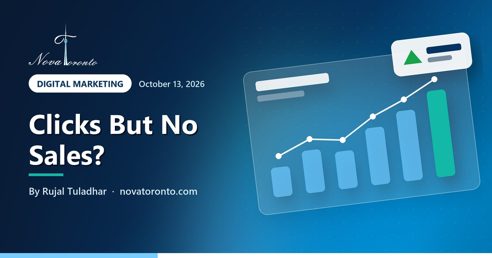

Facebook ads getting clicks but no sales? Why and what to change
Published October 13, 2026 • By Rujal Tuladhar

Your Facebook and Instagram ads are getting clicks, Ads Manager shows a decent click-through rate, and the Shopify or WooCommerce dashboard shows no orders. It is one of the most common complaints from small online shops in Ontario, and it is rarely fixed by a new image or a bigger budget.
Clicks without sales almost always comes down to one of four things: Meta cannot see your sales, the campaign was told to find clickers rather than buyers, the store loses people between the product page and the payment button, or the offer asks too much of strangers. This post works through each, using Shopify, WooCommerce and Canadian guidance checked on October 13, 2026.
Name the problem
No delivery, clicks without sales and leads without sales need different fixes
Pixel plus Conversions API
Server events are not stopped by browser ad blockers
Clicks are not buyers
Link-click goals find clickers; Sales goals look for buyers
39% leave over extra costs
Baymard: added fees such as delivery and taxes are a top checkout exit
Facebook ads getting clicks but no sales? Why and what to change at a glance — the short version.
First, name which problem you have
Three situations look similar in Ads Manager but need different fixes:
- No delivery: the ads barely spend or reach few people. That is a budget, audience, review or bidding issue, not a sales issue.
- Clicks without sales: people land on your site and leave. This post is mostly about this one.
- Leads without sales: forms or messages come in but nobody buys. Look at lead quality and how fast you follow up, not just the ads.
Before anything else, compare Ads Manager with your store's own order report for the same dates. If the store shows orders that Meta does not, you have a tracking problem, not an ads problem.
Check the Pixel and the Conversions API
The Meta Pixel is code in your store that reports what visitors do; the Conversions API sends events from your store's server to Meta instead of from the shopper's browser. You want both.
Shopify's Facebook data sharing guide shows why. At the Standard level only the Meta pixel collects data, and a browser-based ad blocker can stop it from sharing. At the Enhanced and Maximum levels the store also uses the Conversions API, which sends the purchase event between Shopify and Facebook servers, and data sent server to server cannot be blocked by browser ad blockers. Shopify also notes that those levels share customer personal information to match users on Facebook's network, so make sure your privacy policy says so.
On WooCommerce, the Facebook for WooCommerce documentation says the Conversions API is implemented automatically and events are deduplicated by a unique event ID, so the same purchase is not counted twice. It suggests Meta's Pixel Helper Chrome extension to confirm the pixel is installed.
Then place a real test order and confirm in Events Manager that one Purchase event arrives with the right value in Canadian dollars.
Avoid the link-click objective trap
Meta campaigns start with one of six objectives: Awareness, Traffic, Engagement, Leads, App promotion and Sales. Many first campaigns use Traffic because the cost per click looks low. Advertising consultant Jon Loomer's guide to Meta campaign objectives is blunt about it: the Landing Page Views and Link Clicks goals will mainly drive clicks. For website purchases he uses the Sales objective, whose goal targets the people most likely to take a specific action on your website.
So a Traffic campaign does what it was asked: it finds people who click. Those are not necessarily buyers. If your goal is orders, run a Sales campaign optimized for purchases once the Pixel and Conversions API report purchases reliably. Loomer also warns that a small audience may not give a purchase-optimized ad set enough volume to exit the learning phase, so do not split a small budget across many ad sets.
Remove friction on the product page and checkout
Baymard Institute's checkout research reports that 39% of shoppers abandon a checkout because of additional fees such as delivery charges and taxes, 21% because delivery was too slow, and 19% if they are forced to create an account. Its advice: show the full cost in the cart, show shipping speed and dates before the last step, and offer guest checkout.
For Ontario shops that means: show prices in Canadian dollars on the product page, show shipping cost or a free-shipping threshold before checkout, state delivery times, and turn on guest checkout. Make sure the page an ad sends people to is the exact product in the ad, and that it loads fast on a phone.
There is a legal side too. Canada's Competition Bureau says promoting a price that is not attainable because of fixed charges or fees that consumers must pay is against the law, with an exception for fees imposed by government, such as sales tax. If your ad shows a price, the customer must be able to pay that price. This is general information, not legal advice.
Give cold audiences a smaller first step
People who have never heard of you may not buy on the first click. A lead-first offer asks for less: an email for a first-order discount, a sizing guide, a sample or a quote. That is a job for the Leads objective rather than Sales.
This suits higher-priced items, services and products people want to compare first. Follow up fast with a short email or text sequence, and only add people who gave permission to receive marketing messages. Keep a separate Sales campaign aimed at site visitors and past customers, who already know you.
Set a stop-loss on cost per purchase
Decide in advance how much you can pay for one sale and still make money, then pause or change an ad set that passes that figure. An illustrative example, not a benchmark: a product that sells for $60 and leaves $25 after product cost, shipping and payment fees can afford at most $25 per purchase to break even on the first order.
- If an ad set spends your break-even amount with no purchase, check tracking and the checkout first.
- If it spends two to three times that amount with no purchase, and tracking works, pause it and test a new offer or audience.
- Change one thing at a time so you know what worked.
If customers often buy again, you may accept a higher first-order cost, but base that on your own repeat-order data, not hope.
The bottom line
When Facebook ads bring clicks but no sales, start with measurement: confirm the Pixel and Conversions API both report purchases once each. Then make sure the campaign is optimizing for purchases rather than link clicks, remove surprise costs and forced sign-ups from checkout, use a lead-first offer for cold audiences, and set a stop-loss on cost per purchase before you spend.
If you would like help, our digital marketing service sets up tracking and manages Meta and Google ads for Ontario businesses. Most local businesses start around $500 to $1,500 a month in ad spend, and we build the plan around your budget on a free call. For more, see Google Ads vs Meta ads: which to run first, what a Shopify store costs in Canada in year one and what different website budgets get you in Ontario.
Common questions
Why am I getting clicks on Facebook ads but no sales?
The usual causes are tracking that does not report purchases, a Traffic campaign optimized for link clicks instead of purchases, surprise costs or forced account creation at checkout, and an offer that asks cold audiences to buy too soon. Compare Ads Manager with your store's order report first.
Do I need the Conversions API if I already have the Meta Pixel?
It helps. A browser ad blocker can stop the pixel from sharing data, while the Conversions API sends purchase events from your store's server, which browser ad blockers cannot block. On Shopify that means the Enhanced or Maximum data-sharing level; the WooCommerce plugin sets it up automatically and deduplicates events by event ID.
Should I use the Traffic or Sales objective for Facebook ads?
If you want orders, use Sales optimized for purchases once purchase tracking works. Traffic goals such as Link Clicks and Landing Page Views mainly find people likely to click, who are not necessarily people likely to buy.
When should I turn off a Facebook ad that is not selling?
Set a limit before you start based on what one sale is worth to you. If an ad set spends that amount with no purchase, check tracking and checkout. If it spends two to three times that with tracking working and still no purchase, pause it and test a new offer or audience.
Want this working in your business?
Book a free 30-minute call and we'll map out which of these would actually save you time and win you customers.
Book a Free ConsultationNew to AI? Take our free 7-lesson AI course for beginners.
Sources: Shopify Help Center: Facebook data sharing • WooCommerce: Facebook for WooCommerce documentation • Jon Loomer: Meta campaign objectives best practices • Baymard Institute: How to reduce cart abandonment • Competition Bureau Canada: Drip pricing